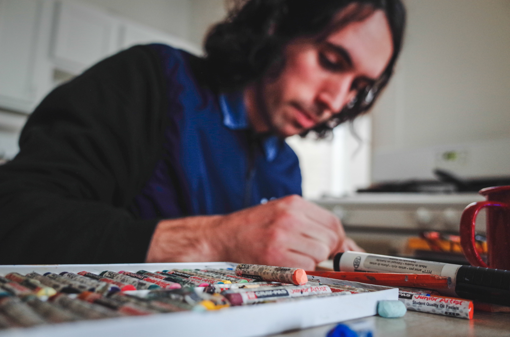

We caught up with studio member Nico Rizzo, a Chicago-based painter, skater, and scribble extraordinaire. We discussed his upbringing, influences, skateboarding, and his upcoming zine Scribbles.
Lili Mac: At what point in your life did you find art?
Nico Rizzo: My dad is a painter, poet, collage-artist. I remember being around his pieces ever since I can remember anything, but the first time I distinctly recall making a drawing, I was in 4th grade. It was this teddy bear with machine guns, inspired by some…squirrel video game? It said, “No Name Killer, Worst Way to Die.” I thought it was the funniest thing. My mom still has that drawing. She thinks it’s really funny.
LM: Were your parents supportive?
NR: Yeah, they were always really supportive from the get-go. They were more supportive of that than skating…
LM: So was skating a big part of your life growing up?
NR: Yeah, art and skating go hand in hand. Some of the first drawings that I would do were little logos from skate companies. At the time, my brother was a pro-skater, and I think that he was a big influence on me.
When I was younger, I didn’t really appreciate all the different ways that art could satisfy me. And as I grew up, I realized that it can keep you from being bored, it can keep you from being depressed. Art satisfies the part of me that feels guilt for being a human, which requires energy, and it kind of solves the human condition, which to me is being a really conscientious, self-aware creature that also knows it’s gonna die, but also experiences hunger, jealousy...it keeps me from worrying about very superficial stuff. I’ve stopped caring about my clothing. I’ve stopped worrying about where I stand socially. It has made me a more conscientious consumer. I know that a few times growing up, I have strayed away from art and maybe drank or smoked instead of doing productive stuff, because growing up is hard and feeling feelings is hard. Art helps you channel those feelings in a productive way - embrace the good ones and let the bad ones come and go. A lot of the time while making art, I forget about who I am, or where I am. I think that’s pretty cool.
LM: So…it’s like a positive form of disassociation?
NR: Totally. I’d say so, but sometimes you make a drawing and you never see it again. That can be kind of heartbreaking. I try to focus on the practice of making stuff instead of worrying about where things go and how things get destroyed over time. Something that’s reassuring is remembering that I, too, will die at some point, so it doesn’t matter if these things go unseen, as long as I’m having fun making more stuff.
Scribbler Alert c. 2016-2017. Pencil & ink on paper.
LM: Could you tell us about the work featured in this new zine, Scribbles?
NR: So at the beginning of that movement, I was just drawing from imagination. I would just start literally scribbling and see some sort of image in that scribble, and then develop it, whether it’s gonna be a face, or maybe a mountain-scape, or a figure, and that got me interested in doing stuff that’s fully abstract, that doesn’t have representations. Things get a little more observation-based, more color gets introduced, multimedia becomes a little bit more important. As far as little motifs, you can see feet come up a lot, because that’s something that I can draw pretty readily.
LM: So a lot of these pieces are on—
NR: Sticky notes. That was something I was doing at my work. Really fun. My boss got upset because I would just take all the sticky notes; she would call me “the sticky-note thief.” It was a cafe job. And sometimes there was no one there, so I was like, why not draw if it’s snowing outside and I’ve got all this caffeine raging in me? Why not make art? It was kind of the climax of my day, because serving people’s pretty exhausting, especially if you have to be really chipper and a little bit phony. So I would really get excited when I made something that I liked and got to bring it home.
I think that another trend that comes up in that zine is my loss of fear. Emerging as an artist can be frightening because you don’t know how people are going to take your work, if it’s gonna be misunderstood. Also, I didn’t realize that you can improvise pretty readily. If something’s bad, you can just throw it out. So, my confidence built up throughout that process. I think fear is an interesting motif in it, too. I like stuff that’s ambiguously frightening, because I think that a lot of people get motivated and controlled by their own fears. I want to represent stuff that’s a little bit off-putting, but I want the audience to have to think about whether or not this is something evil or if it’s something in that gray area that’s just itself. I think spiders are a good example. People kill spiders out of fear, but do spiders really harm you? Not really.
LM: So, you drawing or scribbling these somewhat frightening images is proving to yourself that you can draw those things and you don’t have to hold them back.
NR: Totally. And that you don’t have to be afraid of how other people are gonna receive it. I know one of my friends has said that certain sculptures I’ve made look cursed or haunted, and it’s totally okay to say that, but if you’re gonna be afraid of a sculpture, you’ve got other things to worry about.
LM: Do you prefer drawing on clean base materials, like blank paper, or do you prefer found items and materials? There’s a mix of both in the zine.
NR: I’ll draw on whatever’s there, really, but it is nice if you find something. Using stuff that’s a little bit gritty makes it a bit easier if you’re a perfectionist, to not have to worry about little smudges or if the paper gets wrinkled, because it’s already kind of in a shitty state.
Some Squares c. 2017. Ink on paper.
LM: There was one piece in there that differs greatly from the others, this square piece. It’s much more organized, it’s on grid paper…what was the impetus for doing that as opposed to the somewhat more chaotic nature of your other pieces?
NR: Art is a good way to channel whatever energy you have. If I’m feeling really mellow, making some sort of pattern like this is really satisfying, but with this [piece], I wanted to make a pattern that breaks down. So, in the center, it’s more structured. As it gets towards the top, it becomes a little bit more frazzled and breaks down.
LM: So did you work from the bottom up?
NR: With that one, yeah. And then there’s that smudge on the bottom left one because I wanted that to be kind of an allusion to the fact that this pattern’s gonna break up. This gives your eye a way to either move into the more structured pattern, or move out of it, which I think is pretty fun. With abstract pieces like that, you can tilt it any way you want, and it’s a different story.
A Camel and the Sun c. 2017. Pencil & crayon on paper.
LM: What is the function of text in your work?
NR: Text can be really tricky. Like, if you write the wrong word at the wrong place, it can be so off-putting.
LM: Because words have a lot more literal weight and significance than images do.
NR: Right. A lot of times, it’s just for composition’s sake. With this one in particular, it just says “Camel” because I thought it looked nice as a way to frame that camel with kind of a base.
LM: Is it in any way an allusion to the cigarettes?
NR: Totally. Yeah, that was at my work, and I thought it was interesting that workers get smoke breaks, and it almost made me want to go out have a cigarette, even though I haven’t smoked for a while...just because I wanted to have a smoke break.
LM: So did you draw this instead of having a smoke break?
NR: I did.
LM: Where do you see your work going from here? Do you find yourself wanting to go more towards larger media?
NR: I wanna go towards bigger surfaces. It’s a little bit more frightening to work on something that’s bigger than you, but I feel like it’s more satisfying for that reason. My dream is to have a comfy studio where I can work on stuff that’s way bigger than me. It reminds you that you’re just a little grain of sand, or whatever you wanna call it. And I think that the excitement from skateboarding is something I wanna recreate while making art.
LM: What about skateboarding makes you want to put it into art?
NR: Skating is really fun...but my knee kind of fell apart, and that made me realize skating’s really impermanent in my life. So, I want to have something that’s as exciting throughout my whole life. Skateboarding can be funny, it can be tragic, it can be really exciting, it can be really calming to watch or to do, and I want some sort of outlet like that throughout my adulthood.

LM: Anything else you want to add?
NR: I definitely want to encourage other people to make art. That’s not really that brilliant to say, but I certainly think that art has helped shape the way I think about myself and think about my friends and think about the world. I try to eat at home, I try not to buy new clothes, I try to donate my money, because art is so satisfying. And so whether you're a dancer, a photographer, a poet, I encourage everyone to keep going and to experiment with different media. Taking criticism is something that’s really hard, but if people are criticizing your work, that means that they take it seriously. I love talking to new artists and seeing what people do, so if anyone sees me in the streets, say what’s up.